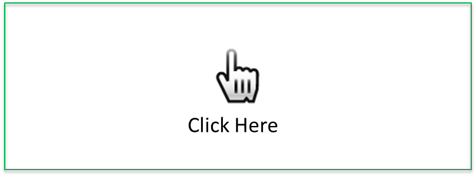

1質点系時刻歴解析シミュレーションのサンプル
画像をクリックして，マウスを動かしてください。
画像からマウスが離れると，波形データの入力が終了します。

入力波形を表示
／ モデルの応答を表示
※波形も同時に表示
建物選択
諸元設定
入力設定
建物をリストから選択してください。
指定した建物モデルの諸元が設定されます。
---選択してください---
建物モデル１
建物モデル２
建物モデル３
建物モデル４(2自由度系)
建物モデル５(5自由度系)
選択
質量最小値：
／質量最小値：
剛性最小値：
／剛性最小値：
減衰最小値：
／減衰最小値：
地震波をリストから選択してください。
開始ボタンを押すと現在の建物モデルに地震波が入力されます。
---選択してください---
El Centro NS (1940)
Taft (1952)
Hachinohe (1968)
開始
※まだ使用できません